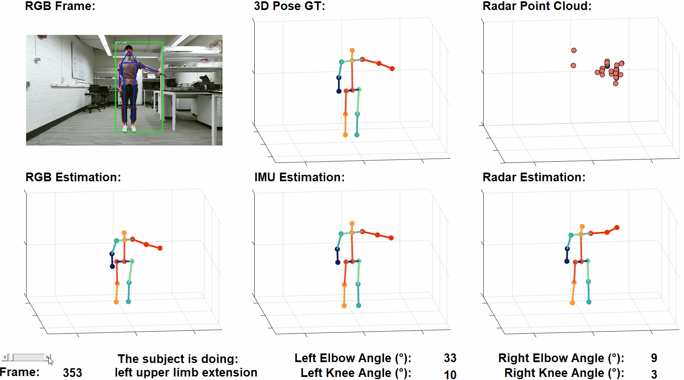
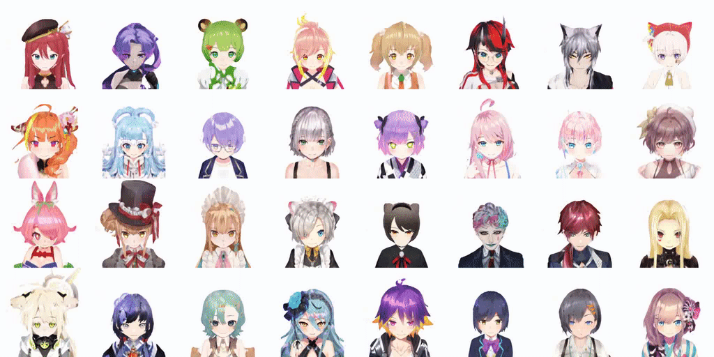
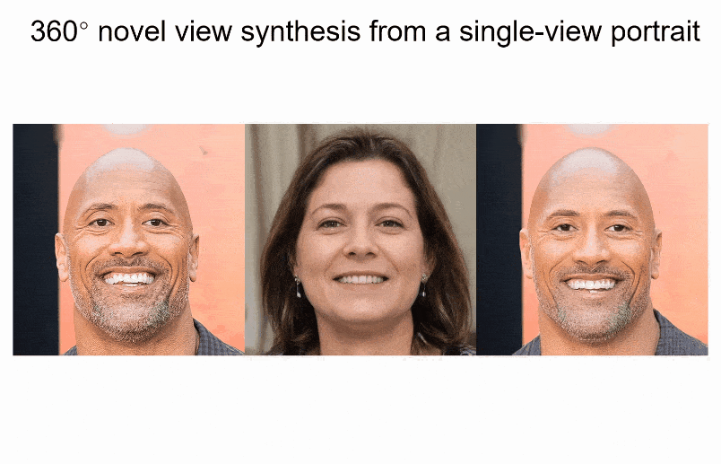

Robotics data pipeline & infrastructure
Collecting, curating, and serving robot learning data at scale — teleoperation, human video, and simulation — so heterogeneous demonstrations become something a policy can actually train on.
Research Scientist · Meta · Redmond, WA
Embodied AI & robot learning
VLA, world-action models, dexterous manipulation, powered by large-scale robotics data & infra.
Built on a foundation of multi-modal motion generation and 3D humans.
Google Scholar citations —
Current Focus
Collecting, curating, and serving robot learning data at scale — teleoperation, human video, and simulation — so heterogeneous demonstrations become something a policy can actually train on.
Vision-language-action policies that read an instruction and a scene and emit control, paired with world models that predict what a body does next, so perception, prediction, and action share one representation.
Multi-fingered hands: contact-rich grasping, in-hand reorientation, and retargeting human hand motion onto robot hardware without losing the dexterity that made the demonstration useful.
Selected Work

placeholder mediaSeparating "did the model choose the right thing" from "did the body manage to do it" turns embodied failure into something you can actually attribute.

placeholder mediaStreaming is the constraint that separates a video model from a world model an agent can act inside: it has to keep up with the agent.
One pretrained motion prior, prompted rather than retrained, covers behaviors and constraints that normally need a model each.
Continuous tokens avoid the quantization jitter of discrete motion codes while keeping the pretrained language model intact.

The first 3D-aware GAN to synthesize a full head rather than a frontal face, back of the skull and hair included.

placeholder mediaFollow-up work to PanoHead: the geometry representation, not the generator, was what capped full-head quality.
Also
mRI: Multi-modal 3D Human Pose Estimation Dataset using mmWave, RGB-D, and Inertial Sensors
PAniC-3D: Stylized Single-view 3D Reconstruction from Portraits of Anime Characters
About
Research scientist at Meta in Redmond, working on embodied AI and robot learning. Ph.D. in Computer Engineering from the University of Wisconsin-Madison (2023), advised by Prof. Umit Y. Ogras and working closely with Prof. Yin Li; B.S. from the University of Electronic Science and Technology of China. Earlier work spans multi-modal motion generation, 3D human and head synthesis, and sensor-grounded pose estimation.